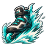
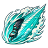
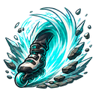
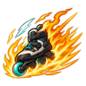

Technique trees › Fighting and weapon styles
Sky Skates (Air Trek Arts)
5 techniques in the Taijutsu tab.
Unlocks through World of Naruto's own trees, a gene, a build choice or a profession.

Kick Off D
Chakra 8. Lace up and glide for a fight: very fast.
Kick Off D
Chakra 8. Lace up and glide for a fight: very fast.
Lace up and glide for a fight: very fast.
| Rank | Chakra | Cooldown | Class level |
|---|---|---|---|
| D | 8 | 10 s | 2 |
Spin Kick C
Chakra 14. A skating spin that kicks everyone close.
Spin Kick C
Chakra 14. A skating spin that kicks everyone close.
A skating spin that kicks everyone close.
| Rank | Chakra | Cooldown | Class level |
|---|---|---|---|
| C | 14 | 15 s | 4 |

Gale Road C
Chakra 14. Skate through a line of enemies on a road of wind.
Gale Road C
Chakra 14. Skate through a line of enemies on a road of wind.
Skate through a line of enemies on a road of wind.
| Rank | Chakra | Cooldown | Class level |
|---|---|---|---|
| C | 14 | 15 s | 6 |

Sonic Boom B
Chakra 24. Break the sound barrier: everyone in front is blown back.
Sonic Boom B
Chakra 24. Break the sound barrier: everyone in front is blown back.
Break the sound barrier: everyone in front is blown back.
| Rank | Chakra | Cooldown | Class level |
|---|---|---|---|
| B | 24 | 25 s | 9 |

Afterburner A
Chakra 40. Skate so fast the wheels catch fire, burning a line of enemies.
Afterburner A
Chakra 40. Skate so fast the wheels catch fire, burning a line of enemies.
Skate so fast the wheels catch fire, burning a line of enemies.
| Rank | Chakra | Cooldown | Class level |
|---|---|---|---|
| A | 40 | 1.2 hours | 14 |
Chakra is the technique's base cost, the number in its def. In play it is multiplied by the pawn's chakra energy usage multiplier, which traits (chakra artificer 90%, volatile conduit 110%), World of Naruto genes and jutsu enhancements change, so the technique window can show a slightly different number for each ninja. Cooldowns are in-game time, as the technique window shows them, and the pawn's cooldown stat shortens or lengthens them. World of Naruto gives every ninja a base of 100 maximum chakra; genes and traits change it.